自己动手做一个 Jev（100% 本地）
原文：Build your own Jev (100% local) · X 长文 · @_avichawla（Avi Chawla）· 2026-09-20
译文为社区学习用途的非官方中文翻译，版权归原作者所有。
本文提供了把开源 LLM 变成一个快速、本地化决策引擎所需的全部知识，而且无需重新训练。内容涵盖下一 token 打分、带概率分布的固定选项、SGLang，以及在同一个模型上与标准文本生成所做的实测基准对比。
许多 LLM 调用并不需要新写的文本。应用程序已经知道可能的答案，只需要模型从中选一个。
假设一张客服工单上写着："I was charged twice for the same subscription."（同一份订阅被扣了两次费。）
应用程序需要把它派发给三个团队之一：billing（账单）、technical support（技术支持）或 account access（账号访问）。
普通的 LLM 调用会让模型写出一个答案。它可能返回一句话、一个标签或一个 JSON 对象。应用程序等待这段文本，解析它，再提取出被选中的团队。
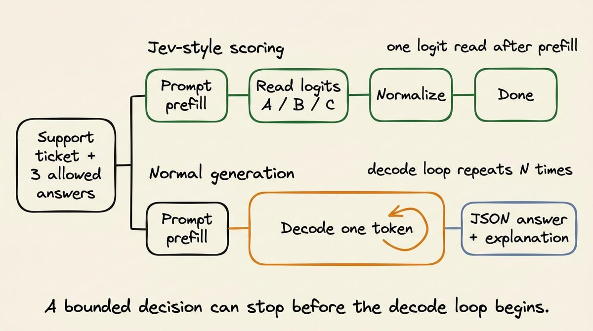
如果每一个合法答案都已知，这些步骤完全没有必要。
事实上，更好也更高效的做法，是把同一个请求当作一个决策来处理（这正是 Jev 的做法）。应用程序把工单/查询和三个允许的答案交给 Jev，模型随后一次性返回每个答案的分数（具体怎么做到，我们很快就会讲到）：
billing 0.91
technical support 0.06
account access 0.03这里 billing 以最高概率被选中，而且应用代码能清楚看到它是以多大的优势胜出的。
这正是 Jev 所具备、而我们将要在本地复现的行为。
我们将提供输入查询和允许的答案。在一次打分请求中，模型就会返回一个决策和一份概率分布，而不生成任何句子或 JSON 对象。
虽然 Jev 是闭源的，但这一推理模式在多个开源语言模型中已经可用。
更具体地说，我们将用 SGLang（通过 /v1/score）实现它，用 Qwen 和 DeepSeek 模型进行测试，并与结构化输出和普通文本生成做对比。
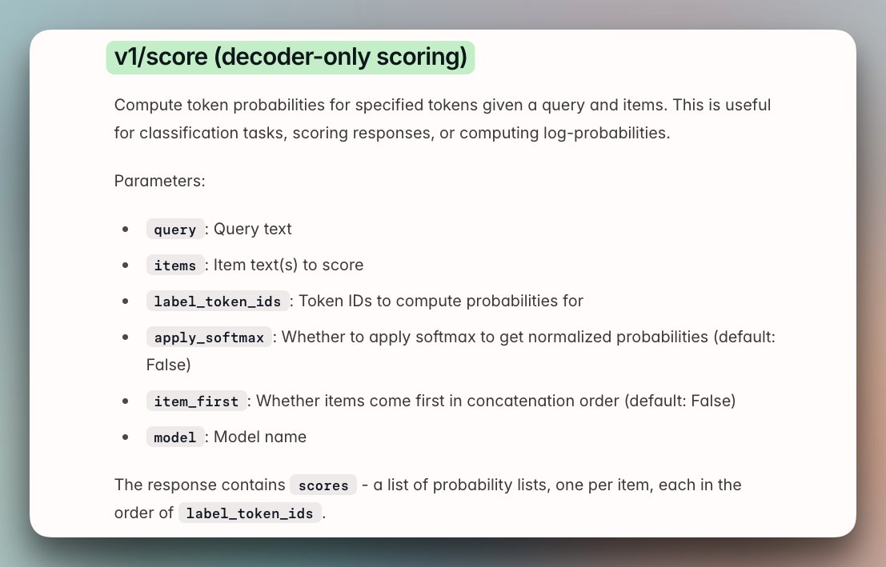
先说清楚预期：本文复现的是推理路径，而不是完整的 Jev 系统。Jev 还包含打分端点所不提供的训练与校准工作。
固定答案打分与结构化输出不同
Jev 的机制很容易与结构化输出混淆，因为两种方法都会限制应用程序收到的内容，但它们在推理服务器内部所做的工作并不相同。
对于上面讨论的同一张客服工单，结构化输出可能会让模型给出如下输出：
{"team": "billing"}指定的 schema 可以防止出现非法对象，但它自己并不负责选出团队。
不过，这一点仍有改进空间，因为在底层，模型仍然要一个 token 一个 token 地生成左花括号、字段名、值和右花括号。生成结束后，应用程序才能读取 team 字段。下面的视频展示了这一过程：
采用打分（Jev 的做法）时，应用程序可以把这三个团队作为合法结果的完整列表提供出来。服务器为每个结果读取一个模型分数，并返回本文前面展示过的那份分布。它不会生成 JSON 对象。
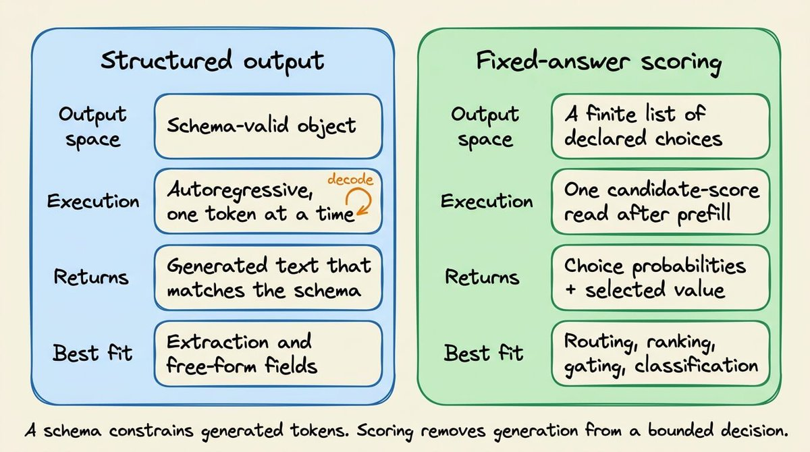
我们可以把三个值都返回，而不是只返回 billing，这样应用代码就能区别对待下面两种结果：
Result 1 Result 2
billing 0.91 billing 0.46
technical 0.06 technical 0.44
account 0.03 account 0.10例如，在上面这组结果里，两者都会选中 billing。
但第一个结果偏好非常明确，而第二个几乎打成平手。应用程序可以自动路由第一张工单，而把第二张按需送去人工复核。
另外，模型只会给出这些分数，如何下游使用则由应用代码制定规则。
例如，可以要求排名第一的答案超过 0.80，并且至少领先第二名 0.20。这些阈值写在代码里，可以被测试，也可以被修改。
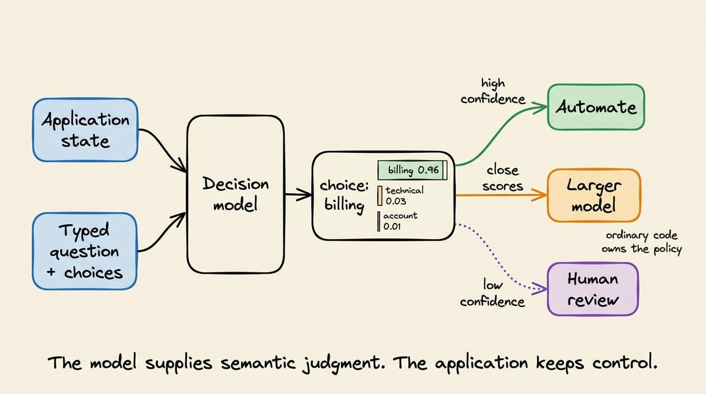
0.91 这个值的含义是：在这三个选择所分配的概率质量中，billing 拿到了 91%。它并不能证明模型在 91% 的情况下都是正确的。要度量这一点，我们需要带标注的样本。这就是我稍后会讨论的校准（calibration）问题。
不过眼下请记住：结构化输出生成的是一个合法对象；固定答案打分返回的是应用程序已知的那些答案上的分布。
LLM 如何生成第一个输出 token
在讨论如何把一个因果 LLM 变成 Jev 式模型之前，最好先理解 LLM 常规的生成步骤。
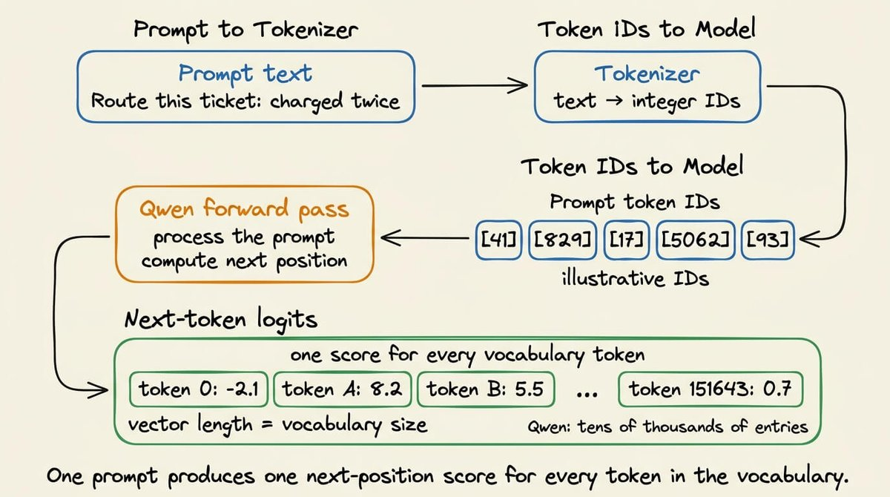
分词器（tokenizer）首先把提示词转换成 token ID。
模型处理这个序列，并为下一个位置产出一个向量。
这个向量中，模型词表里的每个 token 都对应一个数字。例如，Qwen 的词表包含几万个 token，因此这个向量包含几万个数字。
这些原始数字就是 logits。logit 越大，表示模型越倾向于选择该 token 作为接下来的延续。这些值还不是概率。
在正常生成过程中，服务器会对此向量应用模型的解码规则（temperature 等），选出一个 token，并把它追加到提示词后面。
随后模型再为下一个位置产出一个新的、词表大小的向量。生成/解码不断重复这个过程，直到遇到停止 token 或输出上限。
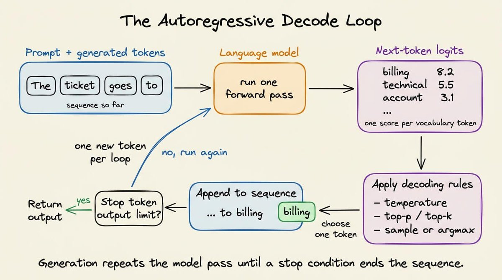
但当我们想做一个有边界的决策时，只需要关心第一个向量。
回想上面讨论的客服路由示例。应用程序接受三个答案：
billing
technical support
account access在提示词中，我们可以给每个答案分配一个短标签：
A = billing
B = technical support
C = account access提示词以要求返回一个标签收尾。
Route the support ticket into exactly one category.
Ticket:
I was charged twice for the same subscription.
Allowed labels:
A = billing
B = technical support
C = account access
Return only the label.
Label:"Label:" 是提示词的最后一段文本。
因此，下一个位置正是模型在正常情况下会生成 A、B 或 C 的地方。
处理完这个提示词后，模型会照常为该位置产出一个词表大小的向量。这个向量将包含 token A 的 logit、B 和 C 的 logit，以及词表中其余每个 token 的 logit。
打分路径接下来可以执行四个操作：
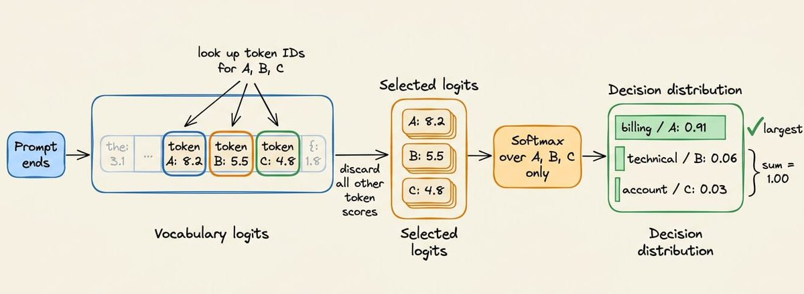
找到 A、B、C 的 token ID。
读取词表向量中这些位置上的三个 logits。
忽略其余所有 logits。
对选出的三个值应用 softmax。
如果选出的 logits 是 8.2、5.5 和 4.8，那么受限 softmax 会得到约 0.91、0.06 和 0.03。我们可以把这些位置映射回 billing、technical support 和 account access。
归一化只限于已声明的选项。我们问的不是 A 在整个词表上是否拥有 91% 的概率。
我们问的是：在应用程序排除了其他一切回答之后，模型如何把它的偏好分配到 A、B、C 之间。
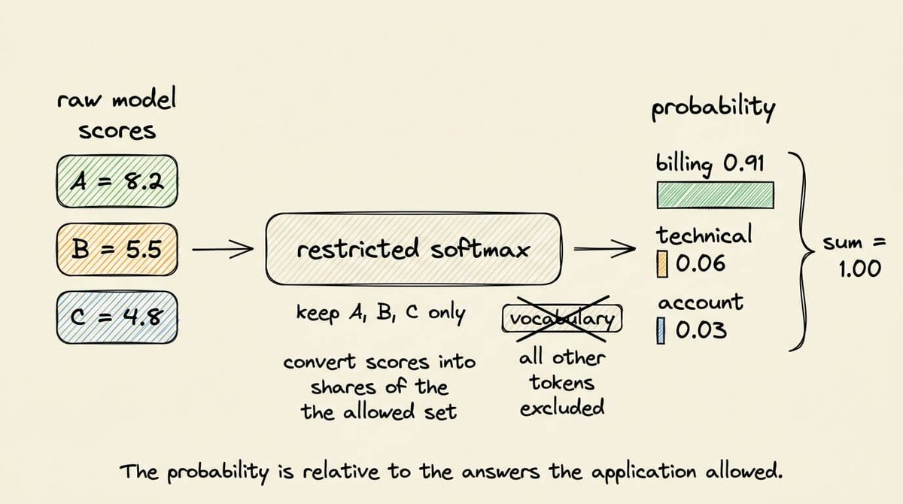
这正是 SGLang 已经在 /v1/score 中实现的操作。
它把提示词送进模型，读取指定的 token 位置，并返回它们的分数。这样我们就不用修改 Qwen 的实现、自己去提取最后的张量了。
顺便说一句，答案之所以使用 A、B、C，而不是直接给 "billing"、"technical support"、"account access" 这些词打分，是因为一个可见的词未必是单个 token。
例如：
"billing" 在一个分词器下可能是单个 token，在另一个分词器下可能是多个 token。
"technical support" 则必然跨越多个位置。
比较这些短语需要序列打分。模型必须先给第一个 token 打分、追加它，再给下一个 token 打分，然后把整条短语的值合并起来。长度也会成为比较的一部分。
而单 token 标签避开了这个问题。每个选项都由同一个输出位置上的一个词表条目表示，而语义含义仍然出现在提示词中：
A = billing questions and payment problems
B = product errors and technical failures
C = login, password, and account access problems模型在处理提示词时会读到这些描述。标签只是我们事后检查其 logit 的那个 token。
我们仍然要验证每个标签确实是单个 token。
例如，分词器常常把前导空格编入 token。因此字符串 "A" 和 " A" 可能拥有不同的 token ID。
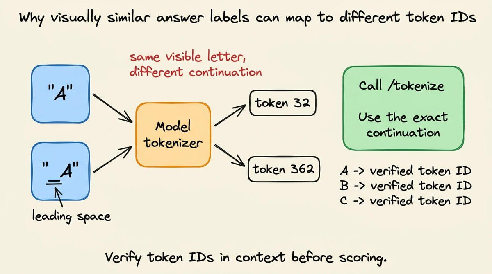
聊天模板也可能在答案位置之前紧挨着放置空白字符或控制 token。
为了避免这些问题，要用模型的聊天模板渲染完整提示词，确定答案位置处期望出现的精确延续文本，再把这个延续文本发送给 /tokenize。如果它产生的不是单个 token，就拒绝该标签。
这层标签映射只存在于打分客户端内部。应用程序发送的是 billing、technical_support 这类语义选项，从不发送 token ID，也永远不会收到 A、B 或 C。这就是"公共 API 与模型标签保持独立"的含义。
最后，当列出的选项并不完备时，答案列表还需要一条兜底出口。
例如，一个安全事件到达一个只提供 billing、technical support 和 account access 的路由时，受限 softmax 仍会把全部概率质量分配给这三个错误选项。
为避免这种情况，当所有具名选项都可能不正确时，请添加 OTHER 或 ESCALATE。
用 SGLang 实现本地打分端点
本地示例只需要一个推理服务器。SGLang 把 Qwen 加载进 GPU 显存，并暴露其原生 HTTP 端点。我们的 Python 脚本直接向这台服务器发送请求。
完整流程如下：
用一个 Qwen 模型启动 SGLang。
把决策写成带字母标签的提示词。
让 SGLang 对这些标签做分词。
向 /v1/score 发送一次请求。
把返回的概率映射回各个选项。
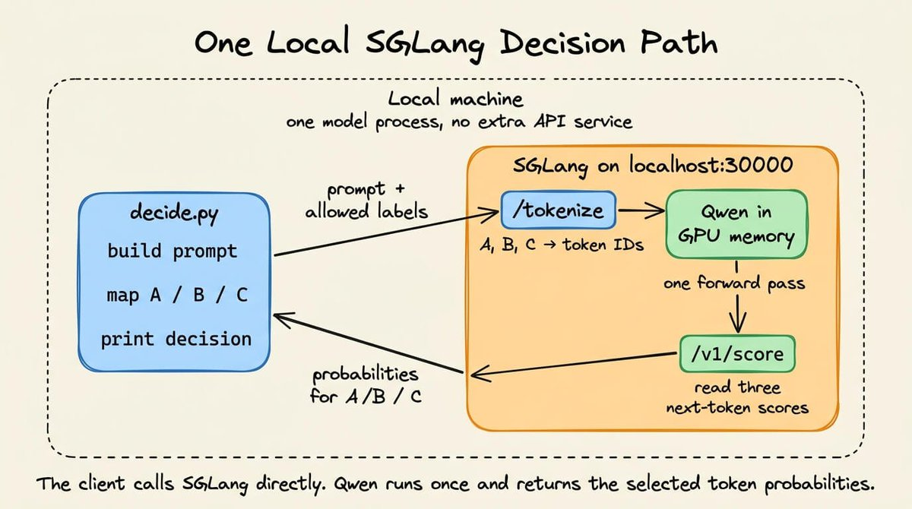
第 1 步：用 SGLang 启动 Qwen
创建一个 Python 环境，并安装本文用到的两个包：
python3 -m venv .venv
source .venv/bin/activate
pip install "sglang[all]==0.5.10.post1" "requests==2.34.2"然后启动模型服务器：
python -m sglang.launch_server \
--model-path Qwen/Qwen2.5-0.5B-Instruct \
--host 127.0.0.1 \
--port 30000首次启动会从 Hugging Face 下载模型，之后的启动会复用本地缓存。加载完成后，Qwen 常驻内存，SGLang 监听 30000 端口。
这个 SGLang 进程就是推理服务。在运行下面的客户端时，请让它保持运行。
第 2 步：定义选项并构建提示词
创建 decide.py，代码如下：
import json
import requests
BASE_URL = "http://127.0.0.1:30000"
MODEL = "Qwen/Qwen2.5-0.5B-Instruct"
choices = {
"A": "billing and payments",
"B": "technical support",
"C": "account access",
}
ticket = "I was charged twice for the same subscription."
choice_lines = "\n".join(
f"{label} = {meaning}" for label, meaning in choices.items()
)
prompt = f"""Ticket:
{ticket}
Question:
Which category matches the ticket?
Allowed labels:
{choice_lines}
Return only the label.
Label:
"""
print(prompt)这个字典记录了每个答案的两种表示。
A 是我们打分的 token。
而 "billing" 是返回给应用程序的含义。
在分词、打分和结果映射的整个过程中，两者的顺序必须保持不变。
这就是此处生成的确切提示词：
Ticket:
I was charged twice for the same subscription.
Question:
Which category matches the ticket?
Allowed labels:
A = billing and payments
B = technical support
C = account access
Return only the label.
Label:提示词在 "Label:" 处结束。
我们要的是模型给下一个本该出现的 token 的分数。我们并不要求 SGLang 生成那个 token。
第 3 步：解析标签的 token ID
在提示词代码之后加上这段代码：
label_token_ids = []
for label in choices:
response = requests.post(
f"{BASE_URL}/tokenize",
json={
"model": MODEL,
"prompt": label,
"add_special_tokens": False,
},
timeout=30,
)
response.raise_for_status()
token_ids = response.json()["tokens"]
if len(token_ids) != 1:
raise ValueError(
f"{label!r} is not a single token: {token_ids}"
)
print(f"{label!r} -> {token_ids}")
label_token_ids.append(token_ids[0])SGLang 的 /tokenize 端点返回 Qwen 分词器产出的整数 ID。任何会被拆成多个 token 的标签都会被拒绝。打分请求需要每个答案对应一个词表位置。
对于 Qwen/Qwen2.5-0.5B-Instruct，这会打印：
'A' -> [32]
'B' -> [33]
'C' -> [34]每个列表都只包含一个整数。因此我们确知每个标签只占一个 token。后面的打分请求将读取词表的 32、33、34 号位置。
这项检查也让我们避免想当然地认为各模型的分词结果一致。在 Qwen 下可用的标签，换一个分词器就可能被拆开。
第 4 步：向 SGLang 请求三个概率
接着添加打分请求：
response = requests.post(
f"{BASE_URL}/v1/score",
json={
"model": MODEL,
"query": prompt,
"items": [""],
"label_token_ids": label_token_ids,
"apply_softmax": True,
},
timeout=120,
)
response.raise_for_status()
score_response = response.json()
print(json.dumps(score_response, indent=2))
scores = score_response["scores"][0]query 包含完整提示词。
空的 "items" 表示我们对紧随其后的那个位置打分。
"label_token_ids" 告诉 SGLang 从 Qwen 那个词表大小的输出中读取哪三个条目。
"apply_softmax" 把这些条目归一化成概率。
由于 items 只有一个条目，响应中也只有一个分数列表。我们用同一个 Qwen checkpoint 跑了这条一模一样的提示词，得到：
{
"scores": [
[
0.67776233,
0.310878605,
0.011359035
]
]
}这三个位置分别对应 A、B、C。softmax 之前，选中的 logits 分别是 25.277620、24.498226 和 21.188837。在不同的硬件与精度设置下，可能出现细微的数值差异。
官方端点参考文档说明，每个返回的列表都遵循 label_token_ids 的顺序。因此第一个分数属于 A，第二个属于 B，第三个属于 C。
第 5 步：把模型标签转换回决策
最后加上映射代码，完成这个脚本：
probabilities = {
choices[label]: float(score)
for label, score in zip(choices, scores, strict=True)
}
decision = max(probabilities, key=probabilities.get)
print(
json.dumps(
{
"decision": decision,
"probabilities": probabilities,
},
indent=2,
)
)
现在，在第二个终端中运行这个脚本：
// Output after running python decide.py
{
"decision": "billing and payments",
"probabilities": {
"billing and payments": 0.6777623295783997,
"technical support": 0.31087860465049744,
"account access": 0.011359035037457943
}
}这些计算由 SGLang 在 /v1/score 背后完成。一个 SGLang 进程对标签分词、运行一次 Qwen、返回选中的概率。
在这个例子中，billing 获胜，但概率只有 0.678。如果策略要求 0.70，这张工单就会被送去复核，而不是自动路由。该阈值应当来自在带标注样本上进行的评估。
打分延迟与自回归生成的实测对比
上面的单请求示例展示了机制本身。我还构建了一个小应用，用来测试这个机制在大量决策下的表现。
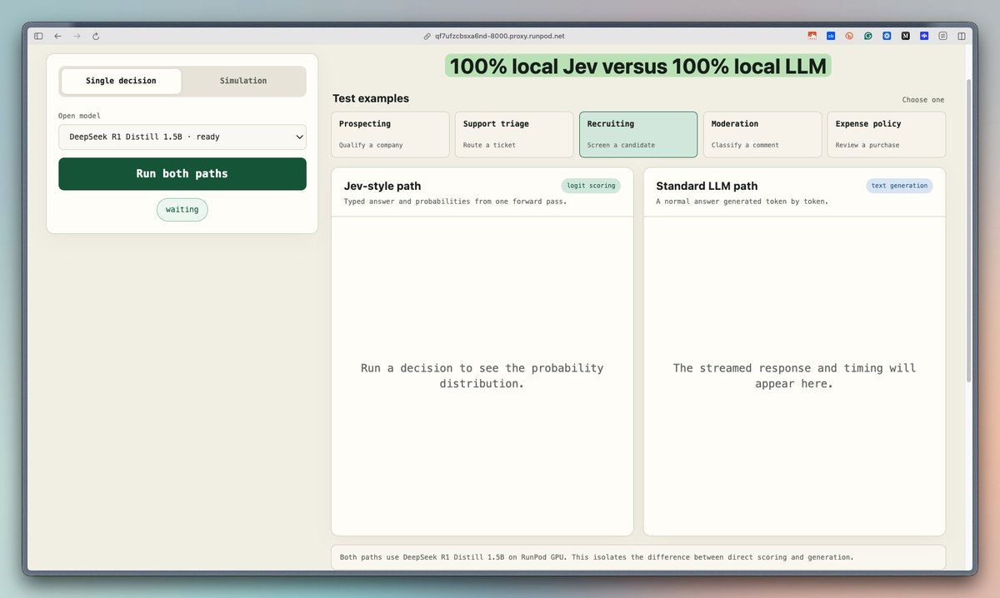
部署好的 demo 支持多个开源模型，例如 Qwen 3 4B、Qwen 2.5 0.5B 与 1.5B、SmolLM2 1.7B、TinyLlama 1.1B，以及 DeepSeek-R1-Distill-Qwen 1.5B。
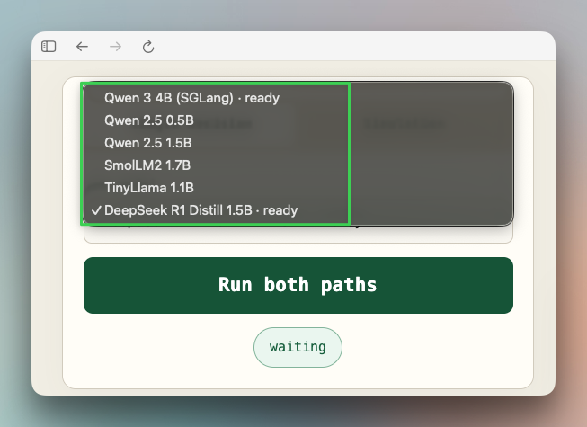
Jev 式赛道调用决策方法：
result = engine.decide(request)
answer = result["answers"]["decision"]
choice = answer["choice"]
probabilities = answer["probabilities"]在 decide() 方法内部，SGLang 通过 /v1/score 接收提示词。请求中包含 A、B、C 的 token ID。
SGLang 跑一遍提示词，读出这三个下一 token 分数，将其归一化，然后停止。响应中不包含任何生成的 token。
标准赛道在同一个引擎上调用生成方法：
result = engine.generate_response(
case["state"],
case["question"],
list(case["criteria"].items()),
max_tokens=32,
)该方法把同样的状态、问题和选项发送给 /v1/chat/completions。
Qwen 生成一个答案和简短解释，最多 32 个 token。应用程序会在前 100 个字符中搜索允许的选项名称。当解析出的选项与存储的标签一致时，该案例被标记为正确。
下面的视频通过一些示例，对比了我们 100% 本地的 Jev 与 100% 本地的 LLM 生成器：
出于上文已经讨论过的原因，速度差距一目了然。
与此同时，我还基于固定的本地数据集构建了一个 100 个案例的仿真。
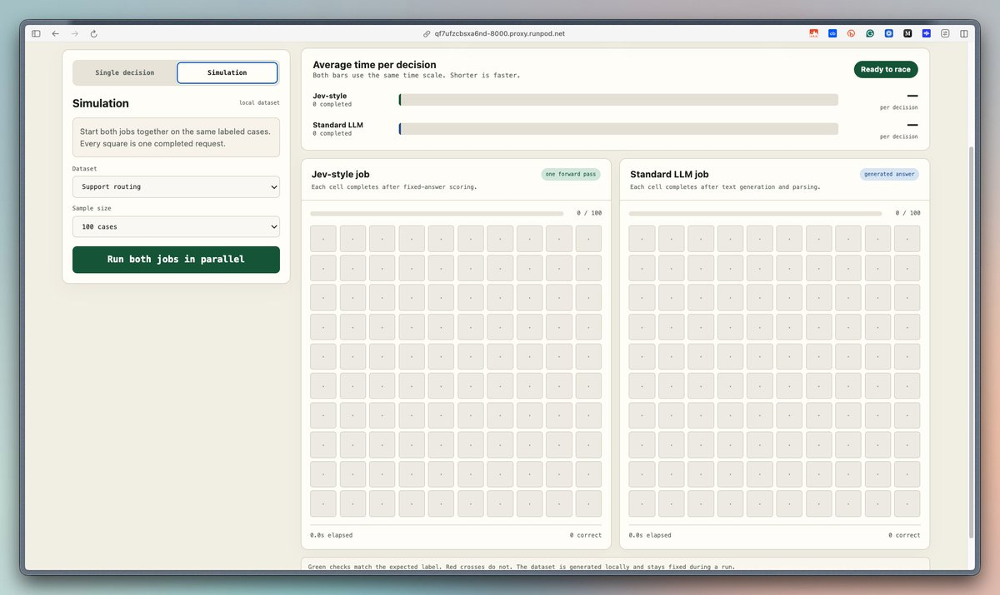
目前的数据集覆盖客服路由、候选人筛选和费用审核。它们自带的期望标签让界面能同时展示速度和正确性。
远端 SGLang 路径在一个 barrier 之后启动两个 worker：
starting_line = threading.Barrier(2)
def worker(lane, runner):
starting_line.wait()
for case in cases:
updates.put(runner(case))
workers = [
threading.Thread(target=worker, args=("jev", run_jev)),
threading.Thread(target=worker, args=("llm", run_llm)),
]
for worker_thread in workers:
worker_thread.start()barrier 会同时放行两个 worker。每条赛道按顺序处理自己的案例。Jev 式 worker 一旦上一个请求结束，就立刻发出下一个打分请求；标准 worker 对生成请求也是如此。
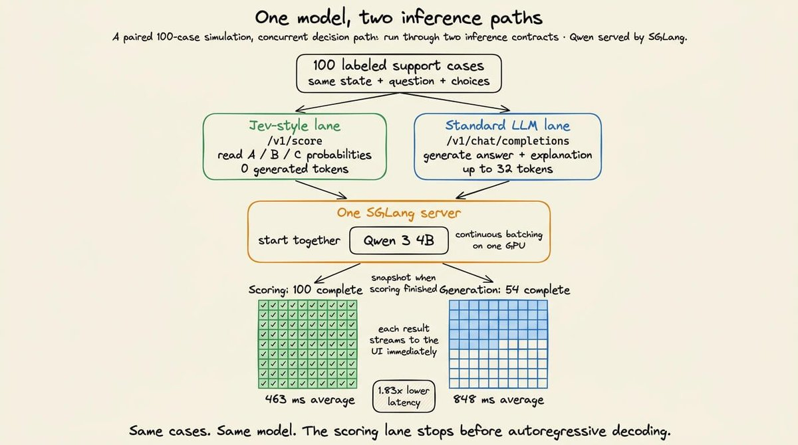
因此两条赛道始终保持同时活跃，但我们并不会一次性发出全部 200 个请求。SGLang 同时接收来自两条赛道的并发任务，并通过 continuous batching 进行调度。两类请求共享同一块 GPU、同样的显存带宽和同一个调度器。
下面的视频并排对比了 Jev 与一个 LLM：
两条赛道同时启动，并在同一台 SGLang 服务器上使用了 Qwen/Qwen3-4B-Instruct-2507。
如何选择合适的方法
打分并不能取代生成，因此 Jev 的方法只在应用程序于推理之前就定义好输出空间时才适用。
理想情况下，兼容的工作负载应该有一组有限且有意义的标签。每个标签都应映射到一个不同的下游动作。
而且调用方需要的仅仅是一个标签及其概率分布，而不是新的文本。
结构化输出则不同：它定义的是响应的语法，解码器仍要逐个 token 地生成字段名和值。
当这些值无法事先枚举时，请使用结构化生成；因为只有候选值已知时，打分才能真正省去解码。
下面这张图比较了常规 LLM 解码、结构化输出解码和 Jev 式打分：
一个不错的做法是：根据所需的输出选择推理路径。
当输出内容在推理之前未知时，选择生成。
当输出集合已知、且做出选择就足够时，选择打分。这种情况下，第一个下一 token 向量已经包含了排序。返回这个排序，就省掉了调用方并不需要的自回归循环。
再次强调：本文项目复现的是 Jev 式推理机制，但并未复现 Jev 的权重、RLCD 流程或评测体系。
这些背后的过程，我打算很快写给大家。
敬请期待！
就到这里！
如果你喜欢这篇教程：
找我 → @_avichawla
我每天都在分享 DS、ML、LLM 和 RAG 方面的教程与洞见。